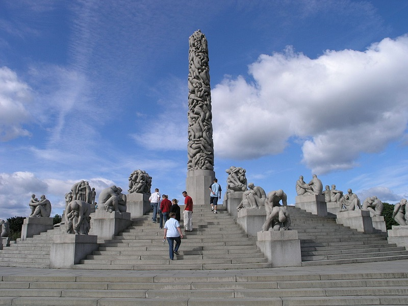

Главная страница | Исландия | Италия | Япония
Норвегия расположена на севере Европы, в западной части Скандинавского полуострова. Омывается на севере Северным Ледовитым океаном (Баренцево море), на северо-востоке граничит с Россией, Финляндией и Швецией, на востоке - со Швецией. На юге пролив Скагеррак отделяет ее от Дании, на западе страна омывается Северным морем. Норвегии принадлежат архипелаг Свальбард (Шпицберген, включая о. Медвежий), остров Ян-Майен и более 50 тыс. мелких островов, большинство из которых представляют собой лишь скальные участки в горловинах фьордов.
В январе и феврале на норвежских территориях удивительно тепло. Средняя температура держится на отметках от 0 до -4 градусов по Цельсию. Ночные температуры могут опускаться до -17 градусов, но такое происходит только в центральных районах. Чем ближе к воде, тем в Норвегии теплее. Прибрежные зоны зимой имеют более мягкий климат, чем районы в центре страны. Сказывается влияние теплых течений. Март, как конец зимы, бывает непредсказуемым и ветреным. В апреле наступает устойчивая оттепель, за которой следует засушливый май. В целом, весенние дни в Норвегии характеризуются плавным повышением температур. Все весенние месяцы всегда бедны на выпадающие осадки. Так в одном месяце осадков может выпасть не более 50 мм. Солнечных дней весной также много, как и летом. Средняя температура в Норвегии летом варьируется в зависимости от района. Так в Осло она может составлять примерно +17 градусов. На севере же средний показатель может опуститься до +7. Лето в норвежских землях бывает достаточно жарким. В июле стоит отличная погода, а световой день увеличивается настолько, что ночи становятся совсем короткими. В сентябре и октябре на территории норвежского государства выпадает больше всего осадков. В эти месяцы их количество равняется 170-240 мм. Иногда ветер и дождь могут осаждать Норвегию около 20 дней подряд. Заканчивается такая непогода с приходом первых заморозков в ноябре.
Блюдо |
Описание |
Фотография |
|---|---|---|
Феналор |
Одним из символичных для Норвегии блюд является феналор. В старину скот забивали в ноябре, и, когда зимние сумерки опускались на крыши домов, в амбарах вывешивали бараньи ноги. Чтобы мясо могло храниться всю зиму, его просаливали, коптили и высушивали. В результате этих трех процессов и получался феналор - копчено-вяленая баранья нога. В отличие от современного продукта, в старину мясо получалось более высушенным и могло храниться не одну зиму. |
|
Пиннещёт |
Это блюдо впервые начали готовить в давнем времени крестьяне, для которых соленое и сушеное мясо были привычной пищей. Шашлык из бараньих ребрышек готовили на праздниках, обычно на рождество, в некоторых частях страны, где разводили овец – особенно в Вестланне и в некоторых городах восточной части Норвегии. |
|
Риббе |
В период Рождества в Норвегии, практически, в каждом доме можно найти это блюдо из ребер. Традиционное норвежское Риббе на Рождество - это ребрышки из свинины, запекаемые в духовке до хрустящей корочки. Для этого блюда используют часть сала со шкуркой и мясной прослойкой. Подаются ребрышки к столу в основном с картофелем или теплой квашеной капустой. |
Оказавшись в Бергене, вы не пропустите главную его достопримечательность никаким образом. Брюгген, старинная Ганзейская набережная, объявленная ЮНЕСКО объектом Всемирного наследия, красуется в гавани на самом виду. Здесь строились самые первые дома в городе.
Статистически, Вигеланд-парк — одна из самых посещаемых достопримечательностей норвежской столицы, причём местных жителей тут ничуть не меньше, чем туристов. Главная причина этой популярности — более двухсот скульптур национального скульптора Норвегии Густава Вигеланда.

Небольшой фьорд (всего 20 км длиной) отличается восхитительным ландшафтом. Гейрангер-фьорд входит в Список Всемирного наследия ЮНЕСКО, это один из наиболее посещаемых фьордов Норвегии. Местные развлечения: рыбалка, байдарки, рафтинг, поездки верхом и летнее катание на лыжах в Стрине.
Стратегически расположенные на восточном берегу гавани Осло, крепость и замок Акерсхус — бесспорно один из шедевров исторической архитектуры столицы Норвегии и одна из самых популярных достопримечательностей города.